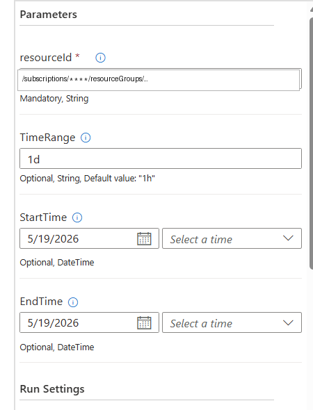
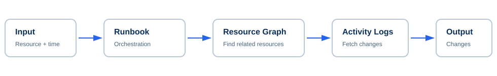
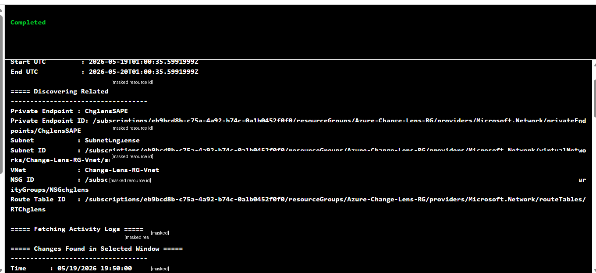
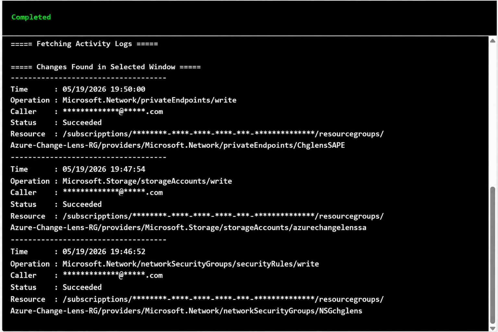

1. Runbook Input Parameters

Prototype Concept
During operational incidents, teams often investigate only the directly affected Azure resource. However, impactful changes may exist on operationally related resources such as private endpoints, subnets, NSGs, or route tables.
The prototype explores whether Azure-native services can surface related resource changes within a selected investigation window to improve troubleshooting context.



